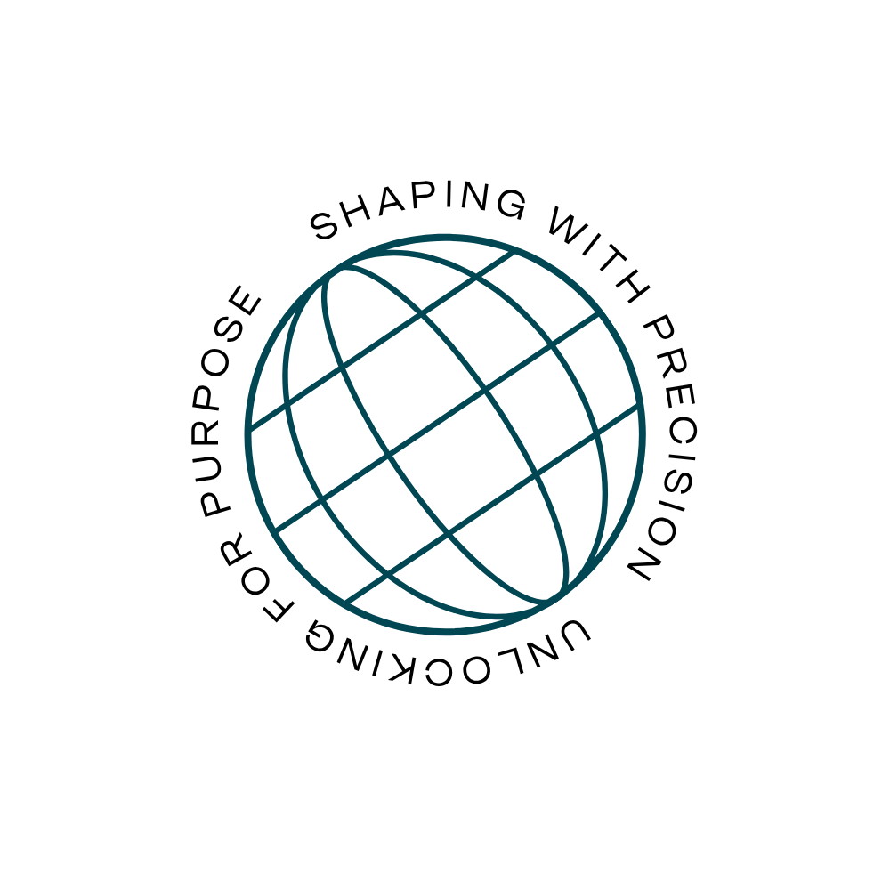

Shaping with precision. Unlocking for purpose.
We train and equip the leaders around young people, and give them the tools to track real progress. Free to start.
Community Interest Company · Croydon, Lambeth, Southwark

Young people don't need saving. They need structure. The Precision Streamline System builds it in three moves.
Learn the method. Level 1 is free and self-paced. Level 2 is £34.99.
Start trainingPut it into practice with a KSL coach through the PILLAR framework. This is how you become a Certified Precision Practitioner.
Book a conversationRecord every session, track each young person’s progress and report the impact.
Explore PRE:CORD
One platform linking young people, mentors, organisations and commissioners. Every interaction has purpose. Every tool has intent. Every outcome is trackable.
structured, identity-first support that meets them where they are.
ready-to-deliver tools. A method, not theory.
live safeguarding oversight, built in.
real-time evidence you can actually report.
Founder & Managing Director
Youth work management, mentoring and community development, including XLP and Beckmead Park Academy. DSL Level 3. Level 5 Diploma in Child Psychology.
“our ‘how’ takes a huge commitment. our ‘why’ empowers future generations.”
Parents, mentors, coaches and pastoral leads. Start free, then get certified through coaching.
Start training free →Schools, MATs, PRUs, charities and sports academies. Train your team and track outcomes on PRE:CORD.
Book a scoping call →Councils, VRUs and funders. Outcome reporting across every provider you oversee.
Talk to us →Every young person deserves targeted, intentional support. Start with the free training, or book 20 minutes with us.